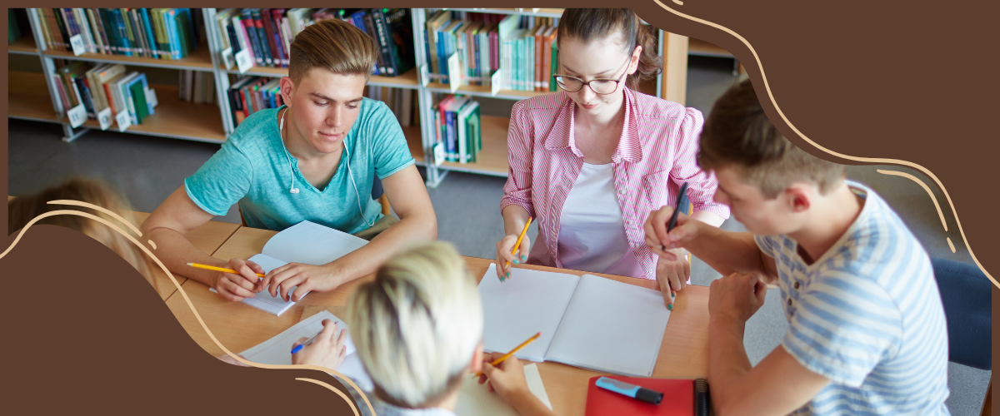

Peranan Pusat Sumber Belajar dalam Memfasilitasi Siswa Memasuki Era Revolusi Industri 4.0
A. Latar Belakang
Setiap manusia pada dasarnya ialah pembelajar. Sejak lahir manusia menerima berbagai pengetahuan, keterampilan dan ajaran-ajaran untuk bersikap dari orang tua atau pengasuhnya. Proses belajar ini terus berlangsung bahkan bertambah ketika ia sudah memasuki usia untuk sekolah. Belajar pun dilakukan manusia sepanjang hayat. Belajar merupakan kebutuhan dan juga kewajiban manusia untuk bisa menjalani kehidupan. Di masa depan ia perlu memiliki kekuatan pengetahuan dan keterampilan untuk berperan dalam kehidupan.
Menyadari pentingnya belajar bagi setiap individu maka penting pula keberadaan sumber belajar. Sebab, dari itu semua manusia dapat melakukan proses belajar. Sumber belajar adalah segala sesuatu (benda, data, fakta, ide, orang dan sebagainya) yang bisa menimbulkan proses belajar. Sumber belajar yang efektif menurut Perceival dan Ellington dalam Andi Prastowo, musti memenuhi tiga syarat berikut: (1) harus bisa tersedia dengan cepat, (2) harus memungkinkan siswa memacu diri sendiri, (3) harus bersifat individual, misalnya memenuhi berbagai kebutuhan untuk belajar mandiri. Dari ketiga persyaratan tersebut, Fatah Syukur NC dalam Andi Prastowo, menambahkan bahwa sumber belajar juga harus mampu memberikan kekuatan dalam proses pembelajaran sehingga tujuan pembelajaran dapat tercapai secara maksimal serta memiliki nilai-nilai pembelajaran edukatif yaitu mengubah dan membawa perubahan yang sempurna terhadap tingkah laku sesuai dengan tujuan pembelajaran. Cara belajar seseorang dipengaruhi oleh perkembangan teknologi informasi dan komunikasi, yang saat ini sudah memasuki Era Revolusi Industri 4.0.
Era 4.0 merupakan revolusi industri yang mengubah pola pikir manusia serta cara kerjanya menggunakan teknologi otomatisasi dengan tingkat efektivitas dan efisiensi waktu bisa meningkat. Pada bidang pendidikan, Fisk (2017) menjelaskan bahwa visi baru pembelajaran mendorong siswa untuk mempelajari tidak hanya keterampilan dan pengetahuan yang dibutuhkan, tetapi juga untuk mengidentifikasi sumber untuk mempelajari keterampilan dan pengetahuan tersebut. Tentunya revolusi industri 4.0 memberikan inovasi dengan munculnya teknologi pendidikan yang diharapkan memudahkan siswa dalam proses KBM (Kegiatan Belajar Mengajar).
B. Tujuan Pembahasan
Tujuan Pembahasan dalam artikel ini akan menjelaskan mengenai peran apa sajakah dalam PSB dalam memfasilitasi siswa di era 4.0 untuk meningkatkan kualitas belajar. Tujuan dari penulis artikel ini agar membuat pembaca memahami peran PSB, PSB dalam memfasilitasi siswa, dan fungsi PSB di era 4.0
C. Kajian Teori
Pelaksanaan pembelajaran tidak terlepas dari adanya sumber belajar. AECT (Association of Education and Communication Technology) mendefinisikan sumber belajar adalah berbagai atau semua sumber baik yang berupa data, orang dan wujud tertentu yang digunakan oleh siswa dalam belajar baik secara terpisah maupun terkombinasi sehingga mempermudah siswa dalam mencapai tujuan belajar. Sumber belajar dapat terdiri dari pesan, orang, bahan, alat, teknik, dan lingkungan.
Dalam sistem pendekatan belajar yang berorientasi pada siswa yang dianggap fleksibel, pusat sumber belajar dapat mempunyai perananan yang sangat penting dalam menyediakan sumber belajar untuk para siswa dalam berbagai bentuk dan jenisnya, lengkap dengan perangkat kerasnya yang sesuai yang diperlukan untuk penggunaan sumber belajar tersebut. Dengan sistem belajar yang begitu luwes para siswa sering memperoleh kesempatan untuk memanfaatkan sumber belajar secara bebas dan mudah yang ada pada pusat sumber belajar di lembaga pendidikan induk.
Pada era revolusi 4.0 atau abad 21 pusat sumber belajar memiliki peranan penting dalam membantu siswa dalam belajar. Pembelajaran pada abad 21 merupakan suatu peralihan pembelajaran dimana kurikulum yang dikembangkan menuntun sekolah untuk mengubah pendekatan pembelajaran dari teacher centred menjadi student centered. Hal ini sesuai dengan tuntutan masa depan dimana peserta didik harus memiliki kecakapan berpikir dan belajar. Dengan berdirinya pusat sumber belajar di dalam sebuah sekolah dapat membantu siswa untuk memfasilitasi belajar sesuai dengan tuntutan kurikulum yang berlaku, dimana siswa dapat menggali informasi dan memperoleh informasi dengan memanfaatkan pusat sumber belajar yang ada.
Pada sekolah dasar dan menengah, pusat sumber belajar yang disentralisir dapat menyimpan dan meminjamkan kedua jenis media pendidikan tersebut baik yang berupa media cetak maupun non cetak, dimana guru secara individual dapat dengan mudah meminjam untuk digunakan pada kelas mereka. Pada kondisi tertentu, sumber belajar paling sering digunakan sebagai alat bantu mengajar terutama pada pendekatan ekspositori yang dianggap masih tradisional daripada digunakan untuk mengajar individual. Penggunaan pusat sumber belajar secara individual oleh para pelajar yang mengikuti pelajaran secara tradisional (institution atau teacher centred) seringkali hanya bersifat sukarela saja, walaupun para siswa sewaktu-waktu diarahkan atau dianjurkan untuk menggunakan sumber belajar tertentu oleh guru.
Semua sumber belajar biasanya tersedia pada setiap saat, tetapi juga memilih sumber belajar khusus apa yang digunakan, seringkali diserahkan kepada siswa, sehingga siswa dapat memilih sumber belajar yang ada pusat sumber belajarnya.
Dari ciri pertama pada paparan di atas, bahwa pembelajaran diarahkan untuk mendorong siswa mencari tahu dari berbagai sumber belajar dengan melakukan observasi, bukan diberitahu, maka eksistensi pusat sumber belajar di sekolah memiliki peran yang penting.
-
Pusat Sumber Belajar sebagai wahana mengkonstruksi
ilmu pengetahuan

Salah satu landasan teori belajar dalam penyusunan Kurikulum abad 21 adalah konstruktivisme. Siswa dibimbing untuk mengkonstruksi pengetahuan baik secara mandiri atau individu maupun melalui diskusi kelompok, dengan bantuan buku panduan, pengayaan maupun buku lain yang relevan yang ada di dalam pusat sumber belajar. Dengan memanfaatkan berbagai macam sumber belajar yang tersedia di pusat sumber belajar, siswa dapat mencari lebih banyak informasi yang didapatkan untuk suatu pengetahuan. Dengan adanya pusat sumber belajar pula siswa dapat mengadakan sebuah diskusi dengan teman sebayanya untuk mengkonstruksi pengetahuan yang masing- masing mereka dapatkan.
-
Pusat Sumber Belajar sebagai wahana mengembangkan
kemampuan berpikir kritis analitis

Salah satu ciri pembelajaran dalam Kurikulum abad 21 adalah bahwa pembelajaran diarahkan untuk melatih siswa berpikir analitis, tidak hanya mekanistis. Berpikir analitis akan mudah terbentuk jika siswa terbiasa dan gemar membaca buku dan menelaah pengetahuan atau informasi yang diperolehnya. Dengan adanya pusat sumber belajar di sekolah, memiliki peranan penting untuk membantu siswa dalam menemukan pengetahuan yang didapatkan agar dapat digali lebih dalam. Dalam hal ini, pusat sumber belajar berperan untuk memfasilitasi siswa secara individu mauapun kelompok dengan memanfaatkan sumber belajar baik berbentuk cetak maupun non cetak, yang dimana dapat digunakan siswa untuk mendapatkan sebuah ide maupun gagasan yang dapat dikembangkan di kelas sebagai suatu bahan diskusi bersama.
-
Pusat Sumber Belajar sebagai laboratorium pembelajaran
berpendekatan ilmiah (scientific approach)
.png)
Karakteristik utama pembelajaran dalam Kurikulum abad 21 adalah menggunakan pendekatan ilmiah (scientific approach) yaitu cara atau mekanisme pembelajaran untuk memfasilitasi siswa agar mendapatkan pengetahuan atau keterampilan dengan prosedur yang didasarkan pada suatu metode ilmiah. Pendekatan ilmiah ini memerlukan langkah-langkah pokok:
a. observing (mengamati),
b. questioning (menanya),
c.associating (menalar),
d. experimenting (mencoba) dan
e. networking (membentuk jejaring)
Selain memiliki peran dalam memfasilitasi siswa Pusat Sumber Belajar juga memiliki Fungsi yang dapat dimanfaatkan oleh siswa di era 4.0. PSB harus menjadi bagian integral dalam sistem pembelajaran, khususnya dalam pencapaian tujuan atau kompetensi belajar. Kata kunci dari pusat sumber belajar adalah dikelola, dilayani, dan dimanfaatkan untuk belajar. Definisi PSB menurut pendapat Tucker tersebut mencerminkan fungsi memiliki makna mendalam dan peranan yang cukup menentukan dalam meningkatkan efektivitas dan efisiensi proses pembelajaran. Terutama fungsi sebagai pengembang sistem pembelajaran yang merupakan sarana utama untuk meningkatkan efektivitas dan efisiensi kegiatan pembelajaran. PSB menjalankan beberapa fungsi di era 4.0 sesuai dengan desainnya pengembang sistem pembelajaran, pengembang multimedia pembelajaran dan pelayanan sumber belajar. Fungsi-fungsi yang harus dijalankan PSB yaitu: fungsi pengembangan sistem instruksional, fungsi pelayanan media, fungsi produksi, fungsi administrasi, dan fungsi pelatihan.
Dengan demikian, di era revolusi industri 4.0 Pusat sumber belajar sangat penting dalam penyelenggaraan pendidikan. Adanya pusat sumber belajar saat ini diharapkan dapat memfasilitasi pembelajaran siswa dengan baik untuk mencapai tujuan secara efektif dan efisien dengan memanfaatkan perkembangan teknologi informasi dan komunikasi selama proses pembelajaran.
D. Kesimpulan
Pada era revolusi 4.0 atau abad 21 pusat sumber belajar memiliki peranan penting dalam membantu siswa dalam belajar. Pembelajaran pada abad 21 merupakan suatu peralihan pembelajaran dimana kurikulum yang dikembangkan menuntun sekolah untuk mengubah pendekatan pembelajaran dari teacher centred menjadi student centered. Oleh karena itu dibutuhkannya Pusat Sumber Belajar yang dapat memfasilitasi siswa di era 4.0. Pusat Sumber Belajar yang dihadirkan harus memiliki peran diantaranya: Pusat Sumber Belajar sebagai wahana mengkonstruksi ilmu pengetahuan, Pusat Sumber Belajar sebagai wahana mengembangkan kemampuan berpikir kritis analitis, dan Pusat Sumber Belajar sebagai laboratorium pembelajaran berpendekatan ilmiah (scientific approach). selain itu untuk mendukung berjalannya Pusat Sumber Belajar untuk siswa terdapat beberapa fungsi yang dihadirkan di dalamnya yaitu fungsi pengembangan sistem instruksional, fungsi pelayanan media, fungsi produksi, fungsi administrasi, dan fungsi pelatihan. Dengan beberapa fungsi tersebut maka Pusat Sumber Belajar yang dihadirkan dapat memfasilitasi pembelajaran siswa di era 4.0.
E. Daftar Pustaka
Mudhofir, 1992, Prinsip-Prinsip Pengelolaan Pusat Sumber
Belajar, Bandung: Remaja Rosda karya.
Bambang Warsita, Teori belajar Robert M.Gagne dan
Implikasinya pada pentingnya Pusat Sumber Belajar
Dr. Darmansyah, S. ,. (2013). Pengelolaan Pusat Sumber
Belajar.
Iskandar Kato, H. S. (2022). Manajemen Pusat Sumber
Belajar. Yayasan Kita Menulis.
Kementerian Pendidikan dan Kebudayaan Republik Indonesia.
(2020).
Portal Rumah Belajar Kemdikbud.
https://belajar.kemdikbud.go.id/